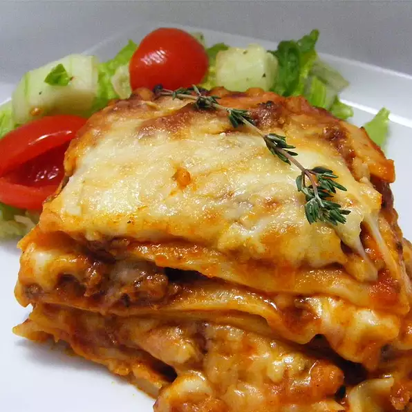

Lasagna

Description
A delicious layered lasagna consisting of tomato sauce, ground beef, ricotta and a mix of mozzarella and provolone cheese. Each of these ingredients work together to make the traditional and simple to cook meat lasagna .
Ingredients
- 1 1/2 pounds ground beef
- 1 teaspoon garlic powder
- 1 (28 ounce) jar sausage flavored spaghetti sauce
- 1 (8 ounce) can tomato sauce
- 1 teaspoon dried oregano
- 1 tablespoon olive oil
- 4 cloves garlic, minced
- 1 small onion, diced
- 1 (8 ounce) package mozzarella cheese, shredded
- 8 ounces provolone cheese, shredded
- 1 (15 ounce) container ricotta cheese
- 2 eggs
- ¼ cup milk
- ½ teaspoon dried oregano
- 9 lasagna noodles
- ¼ cup grated Parmesan cheese
Steps
- Preheat oven to 375 degrees F (190 degrees C).
- Season ground beef with garlic powder. Heat a large skillet over medium-high heat. Cook and stir ground beef in the hot skillet until browned and crumbly, 5 to 7 minutes. Drain and discard grease.
- Pour spaghetti sauce, tomato sauce, and oregano into a large saucepan. Set aside.
- Heat olive oil in a large skillet over medium-high heat. Saute garlic and onions until softened and translucent, about 5 minutes. Place cooked onion-garlic mixture and cooked ground beef into the sauce mixture. Cover and let simmer for 15 to 20 minutes.
- Combine mozzarella and provolone cheeses in a medium bowl. Mix ricotta cheese,eggs, milk, and 1/2 teaspoon oregano together in a separate bowl.
- Layer a 9x13-inch baking pan with just enough sauce to cover the bottom of the pan. Lay three lasagna noodles in the pan over the sauce. Cover with more sauce, then with ricotta mixture then sprinkle with mozzarella/provolone mixture; repeat layering. Finish with a layer of noodles and remaining sauce. Sprinkle top with Parmesan cheese.
- Bake, covered, in the preheated oven for 30 minutes. Uncover and continue to bake until cheese is melted and top is golden, about 15 minutes more.